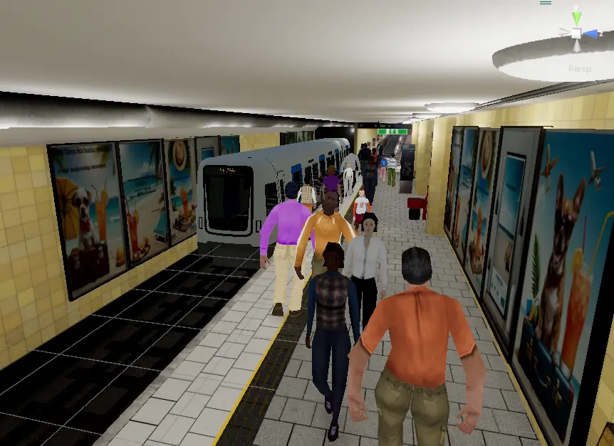

MetroPed
Improving realism in a metro station VR simulation, built with a Scrum team under an agile workflow.
Overview
MetroPed is a virtual reality simulation of a Stockholm metro station developed to support research on how people perceive safety and behave in public transport environments. The application enables researchers, faculty, and students to conduct realistic experiments in an immersive VR.
The project focused on increasing the realism and immersion of the simulation by improving visual fidelity, lighting, environmental assets, spatial audio, and crowd rendering.
My role
Project Managment
Led a team of 6 developers using Agile/Scrum to deliver a client-validated MVP ahead of schedule while managing sprints and risk pipelines.
Impostor Rendering
Developed a custom Impostor rendering system in Unity and C# to optimize the rendering of crowd characters, significantly improving performance while maintaining visual quality and enabling larger, more realistic crowds in the VR simulation.
Git & Documentation
Formulated a robust Git workflow and comprehensive documentation to ensure scalability and a seamless stakeholder handover.
Gallery

